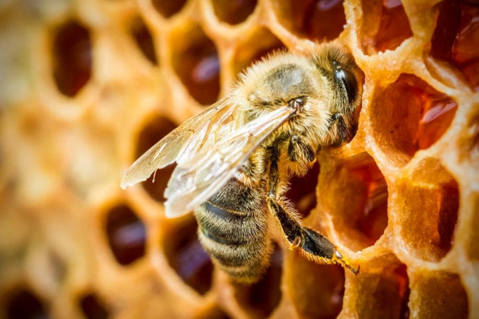
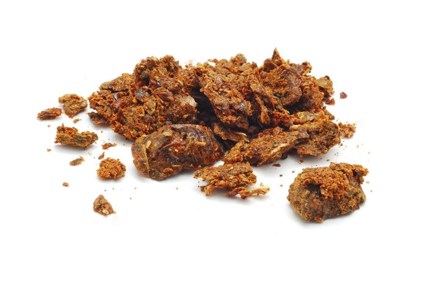

Интересно о пчелах
Общее описание
Пчела принадлежит к надсемейству жалящих летающих насекомых Apoidea. Во всем мире существует приблизительно 21 000 видов и 520 родов пчел.
Насекомые питаются пыльцой и нектаром. При этом пыльца служит для них источником полезных веществ (в частности белка), а нектар – энергией. Некоторые виды обладают наивысшей социальной организацией.
Пчелы могут иметь разную внешность в зависимости от определенного вида. Но в среднем они отличаются размером около 3-х сантиметров и полосатым окрасом, в котором чередуются желто-оранжевый и черный цвета. Тело полностью покрыто волосками, которые служат защитой и выполняют функцию органов осязания.
Отличительной особенностью пчелы является наличие хоботка для высасывания нектара и ощущения вкуса. А усики отвечают за обоняние, распознают тепло/холод/влажность. В качестве органов слуха выступают некоторые части тела и ноги.
Строение, как выглядит пчела
Пчела относится к категории членистоногих животных.
Ее тело состоит из трех основных частей:
- головы;
- головы;
- брюшка.
Также отличительной особенностью насекомых является наружный скелет, который представлен в виде защищающей твердой оболочки. К нему крепятся мускулы и внутренние органы.
Голова пчелы защищена слоем хитина. Помимо усиков, у нее есть верхняя губа и ротовой аппарат с хорошо развитыми мускулами. Это позволяет насекомым переносить мелкие предметы и прокусывать любые природные материалы.
Важнейшим органом пчелы является жало. Она использует его для обороны, но в случае потери продолжительность жизни насекомого сокращается до пары часов. Дело в том, что жало очень острое и имеет зазубрины, в отличие от осы. Атаковав противника, пчела пытается вытащить его и тем самым повреждает свои органы.
Организация пчёл
Система пчелиной организации заслуживает особого внимания, поскольку у них имеется собственная иерархия.
Выделяют несколько типов пчел, в зависимости от их образа жизни:
- общественные и полуобщественные;
- одиночные.
Общественные
Наиболее развитыми в плане совместного существования являются общественные насекомые. К ним относятся медоносные, безжальные пчелы и шмели. Колония насекомых с распределением труда называется полуобщественной. В общественной группе пчелы имеют определенные обязанности, но вместе с этим они представляют общее потомство матери.
Отдельно выделяют высоко-общественную пчелиную колонию – ее члены имеют разное строение организма и определенные обязанности. Они дополняют друг друга. Высоко-общественный рой представлен одной маткой, рабочими пчелами, трутнями.
Пчелиная матка в группе всегда только одна, она существенно выделяется по размеру на фоне остальных. Ее главная функция – продолжение рода. Матка считается главной особью в колонии, поэтому остальные пчелы ее охраняют и обеспечивают пропитанием.
Рабочие пчелы – самки, составляющие основу группы по численности. Их можно чаще всего увидеть в природе. Одно гнездо насчитывает около 80 000 особей. Представители рабочей группы ищут подходящие растения, добывают нектар, делают мед.
Еще одни члены роя – самцы-трутни. Их основная задача – продолжение потомства. Трутни не добывают пыльцу и не делают мед. Они крупнее рабочих пчел и нуждаются в большем количестве пищи. Когда трутень перестает быть полезным для колонии, его просто изгоняют. В целом они не способны перезимовать холода.
Одиночные
Одиночных видов пчел намного больше. У них отсутствует система разделения на рабочих особей и т.д. Новое потомство появляется за счет одного типа самок, которые также добывают пищу. Зачастую они не вырабатывают дополнительные вещества вроде воска или меда.
Размножение пчел
Пчелы размножаются путем откладывания маткой яиц. Если трутень участвовал в оплодотворении, из яиц появятся рабочие особи; если нет – трутни. Развитие происходит по следующей цепочке: яйцо – личинка – предкуколка – куколка – пчела. Чтобы вырастить молодую матку, необходимо особым образом заботиться о личинке и дольше остальных кормить ее специальным молочком. В таком случае лучше развиваются репродуктивные органы.
Как пчелы делают мед?
Для производства меда пчелам необходим нектар – очень сладкий сок, выделяющийся цветущими растениями. Насекомое собирает нектар хоботком, после чего он попадает в специальный орган – медовый зобик.
В слюне пчелы имеются ферменты, которые попадают в зобик вместе с нектаром и там расщепляют содержащиеся в соке углеводы.
Каждый фермент выполняет свою функцию:
- Инвертаза – ускоряет распад сахарозы на глюкозу и фруктозу.
- Глюкозооксидаза – расщепляет глюкозу на глюконовую кислоту (от нее зависит вкус меда) и перекись водорода. Примечательно, что перекись сперва очищает мед от микроорганизмов, а потом распадается.
- Диастаза – расщепляет крахмал на более простые углеводы.
Возвращаясь к сотам, пчела начинает заполнять их собранным нектаром. Здесь в иерархии появляется подвид рабочих пчел – своего рода приемщицы. Они занимаются производством меда дальше, а пчелы-сборщицы снова отправляются за новым нектаром.
Насекомые около 200 раз проводят одну и ту же процедуру. Они выделяют на хоботок немного нектара, чтобы из него испарилась влага, а затем снова отправляют в зобик. Таким образом, вещество ферментируется, пока не превратится в мед.
Интересный факт: чтобы сделать 100 г меда, пчелам необходимо собрать нектар примерно из одного миллиона цветов.
Враги пчел
У пчел достаточно много естественных врагов. Среди них есть как насекомые, так и птицы. Среди насекомых это хищники: богомолы, пауки, пчелоеды (род ос). Регулярно нападают на пчелиные гнезда птицы, которые являются представителями семейств стрижиных, мухоловковых, сорокопутовых и др. Также они являются пищей для ящериц.

Польза
Пчелы – одни из наиболее полезных насекомых. Их ценность заключается в следующем: производство меда, воска; опыление растений и увеличение урожая; продукты жизнедеятельности пчел (яд, перга, маточное молочко, прополис) широко используются в медицине.
Статья подготовлена с использованием материалов научно-популярного журнала: «Как и Почему»